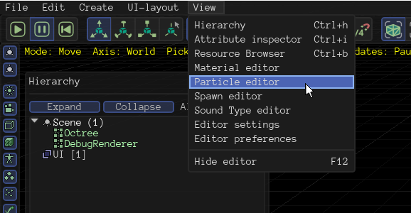

smellymumbler
Since Urho doesn’t seem to have a particle editor, how would you guys implement a simple particle system like this one?
Or maybe this one:

Since Urho doesn’t seem to have a particle editor, how would you guys implement a simple particle system like this one?
Or maybe this one:

Urho3D got a basic particle editor in its editor:

Can particles be affected by physics?

Not as such. You can set a constant force, which
can
be modified during runtime. But that’s about it.
Bouncing off surfaces would require extra code at this point.
Other things the particle system would need to be awesome are, in my opinion: